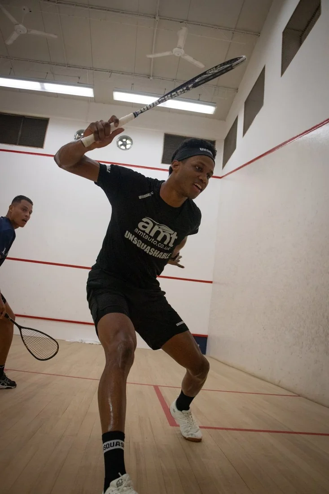
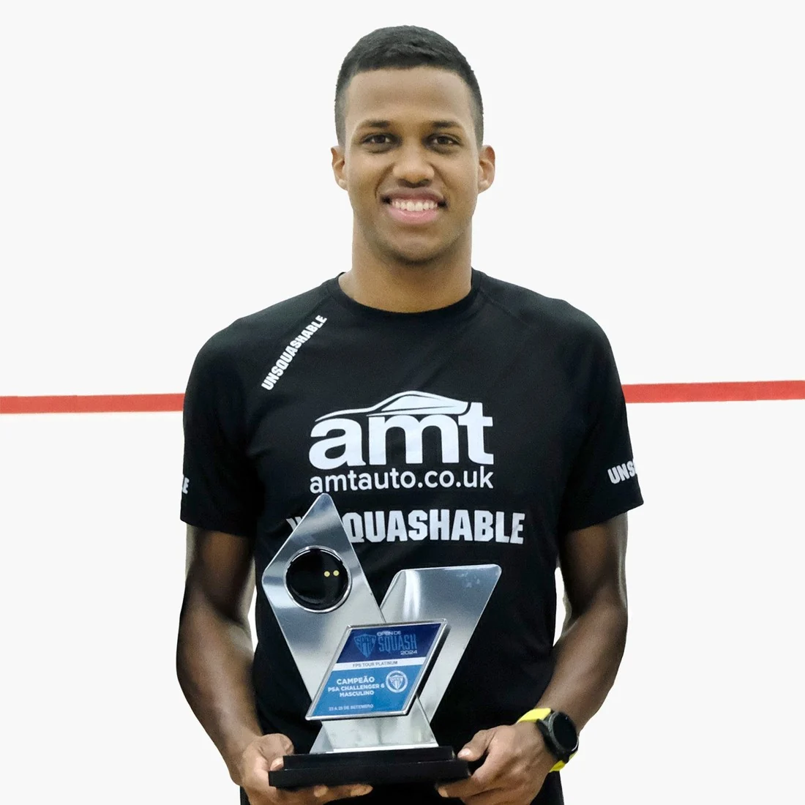

× 2
Individual y dobles mixtos
con Lucía Bautista.
Campeón panamericano
Rumbo a Los Ángeles 2028.
Aspiración olímpica, no clasificación.
Jugador colombiano de squash profesional.
Oro en dobles masculinos de squash en los XIX Juegos Panamericanos Santiago 2023, junto a Juan Camilo Vargas.
Del podio continental al circuito profesional.

ORO PANAMERICANODespués de la segunda ronda / Corte 19.11.2026

Archivo / SPAC 2024Individual y dobles mixtos
con Lucía Bautista.
Andrés Herrera avanzó
frente a Palomino.
Sin fecha ni sede anunciadas
al corte de la agenda.
01 / Registro de confirmación
Juegos Suramericanos Santa Fe 2026
Bronce individual y bronce de dobles mixtos con Lucía Bautista Sarmiento. Fuente: Comité Olímpico Colombiano.
SACC Costa Rica Open · 10–14 de noviembre de 2026
Según el cuadro de FollowSquash, Andrés Herrera avanzó frente a Palomino en segunda ronda. Sede y fechas: organizador.
Sin fecha ni sede confirmadas al 19 de noviembre de 2026.
Ver el archivo de torneos en la agenda Santa Ana ya se disputó. La próxima parada solo se anunciará cuando se confirme la participación individual.
02 / Agenda
Corte:
Próximos torneos: sin participaciones individuales confirmadas al corte.
Centro de Raquetas del Estadio Nacional, Santiago, Chile
Squash: dobles masculinos y equipos masculinos
Oro en dobles con Juan Camilo Vargas y oro por equipos.
Río de Janeiro, Brasil
Individual masculino y dobles masculinos
Campeón en ambas modalidades
Asunción, Paraguay
La Rural Nave C, Rosario, Argentina
Squash: individual masculino y dobles mixtos
Bronce individual y bronce con Lucía Bautista.
Santa Ana Country Club, Santa Ana, Costa Rica
Individual masculino
FollowSquash (secundaria) documenta que Andrés Herrera avanzó frente a Palomino en segunda ronda.
03 / Colaboración
Inscripción, traslados y alojamiento para una parada internacional que el equipo priorice. Santa Ana es un antecedente, no el destino de esta propuesta.
Siguiente paso con el equipo
Confirmar participación, fechas, rubros y costos antes de cotizar o comunicar la propuesta. No hay un canal comercial autorizado.